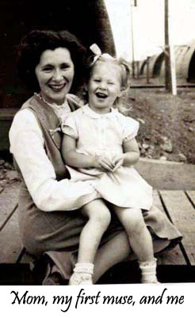

Artist

My work is exhibited nationally and internationally. I share my love of creativity and the arts through workshops with other artists, the elderly and those in health care. My work as Artist-in-Residence in various nursing homes led me to create a wellness program that reaches the hearts and souls of residents through the arts: visual, performance, and creative writing. My interest and dedication led to a Master’s degree in Fine Arts and Medicine. Several of my MFA projects embraced people from all walks of life and encouraged others to be involved in my journey of healing.
In my studio I work with beads, buttons, fiber photo imaging, and other embellishment, to create stitched fabric collage that tells a story. My work is included in the collections of the National Institutes of Health, Kaiser Permanente, The Children's Inn, The Greater Hospital of Baltimore, G Street Fabrics, the State Department’s Art in Embassies program, and other private and corporate collections.
My eclectic background includes over twenty years as a studio artist. I spent many years developing programs for staff and residents in nursing facilities, and five years as the Executive Director of Rockville Arts Place in Rockville, MD. My career began as a teacher of art, English, and mathematics in Maryland’s Montgomery County high schools.
Click the following link to see recent exhibitions and publications in pdf format: Recent Exhibitions and Publications